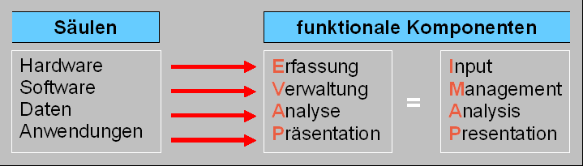
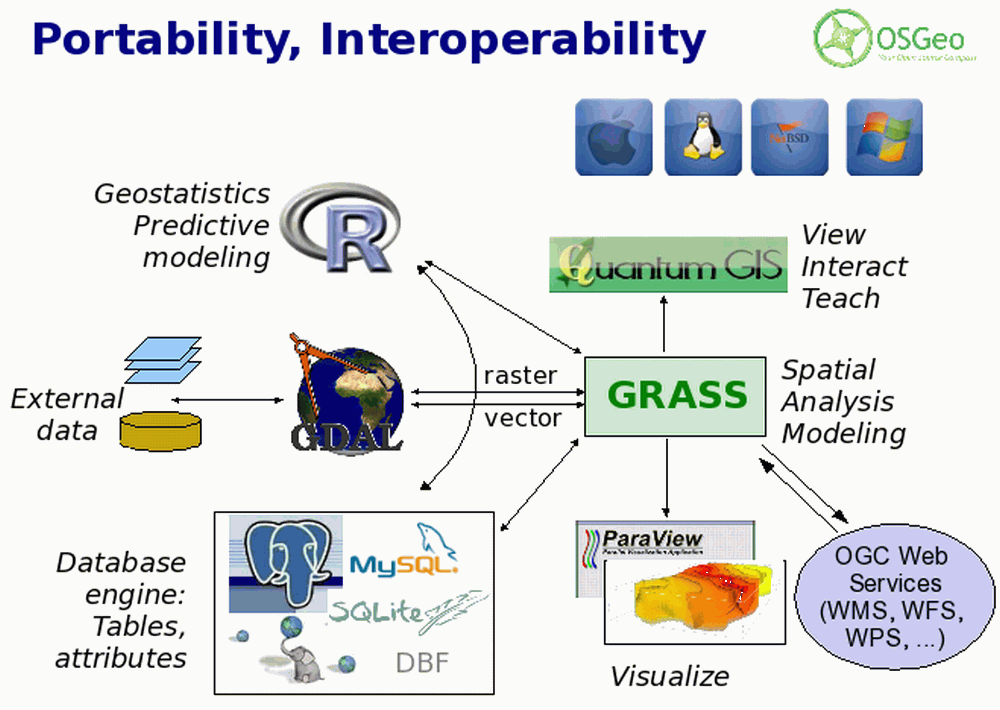
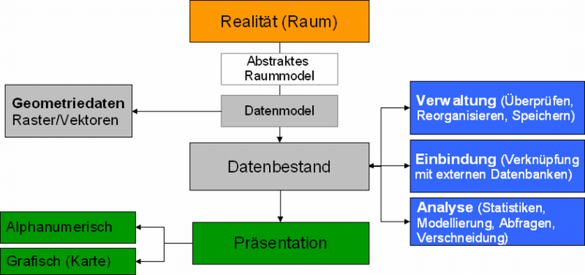

Definition und Verwendung des Begriffs GIS
In der Praxis ist es offenkundig nahezu beliebig was an den Begriff „Informationssystem“ (IS) angehangen wird und so gibt es neben Geographischen auch Land-, Umwelt- oder Amtlich-Topographische-Informationssysteme. Auch die Abgrenzung der Begriffe Land-, Geo- und Rauminformationssysteme (LIS, GIS und RIS) wird in der Fachliteratur nicht einheitlich gehandhabt. Allgemein wird der Begriff des räumlichen Informationssystems (RIS) als Oberbegriff verwendet, während Attribute wie Landschaft bzw. Geo vor allem die fachliche oder methodische Ausrichtung benennen.

Darüber hinaus wandelt sich das Verständnis der einzelnen Definitionen mit einer beachtlichen Geschwindigkeit. Trotz der Vielfältigkeit des Begriffes GIS hat sich die folgende strukturelle Definition durchgesetzt. "GIS ist ein rechnergestütztes Informationssystem, das aus den vier Komponenten Hardware, Software, Daten und den Anwendungen besteht (vgl.. Abbildung 4)." (Bill 2008)
- Mit einem GIS können raumbezogene Daten digital erfasst und überprüft, gespeichert und reorganisiert, modelliert und analysiert sowie alphanumerisch und grafisch präsentiert werden
- Ein GIS vereint eine Datenbank und die zur Bearbeitung und Darstellung, dieser Daten nützlichen Methoden (Bill 2008)
GIS-Software
 Open Source Basis entwickelt werden. In
GIS-Software ist sowohl raumspezifische Methodik zur Bearbeitung spezifischer,
raumrelevanter Problem- und Fragestellungen in der Analyse, Wissensgenerierung
oder Planung integriert als auch Werkzeuge zur Verwaltung, Modellierung und
Präsentation der Daten (vgl. Abb. 6).
Open Source Basis entwickelt werden. In
GIS-Software ist sowohl raumspezifische Methodik zur Bearbeitung spezifischer,
raumrelevanter Problem- und Fragestellungen in der Analyse, Wissensgenerierung
oder Planung integriert als auch Werkzeuge zur Verwaltung, Modellierung und
Präsentation der Daten (vgl. Abb. 6).
GIS im Bachelor Studium Geographie als produktiver Workflow
Betrachten Sie das nachfolgendes Ablaufdiagramm. 
Bearbeiten Sie...
Schauen Sie sich die nachfolgend gelisteten Internet-Präsenzen an. Versuchen Sie die die in der Definition verwendeten Elemente eines GIS zuzuordnen.